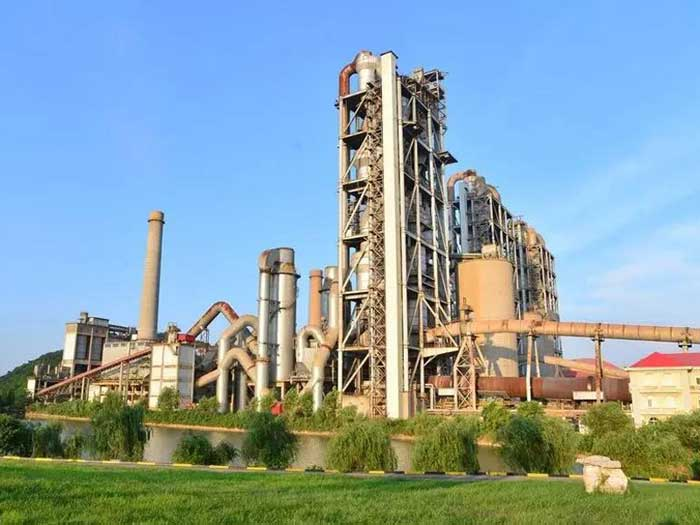
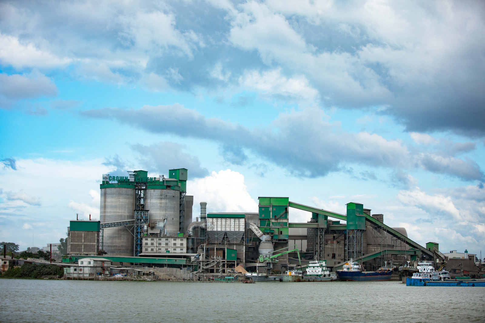
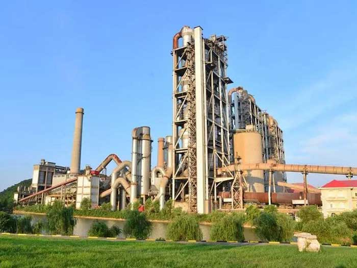
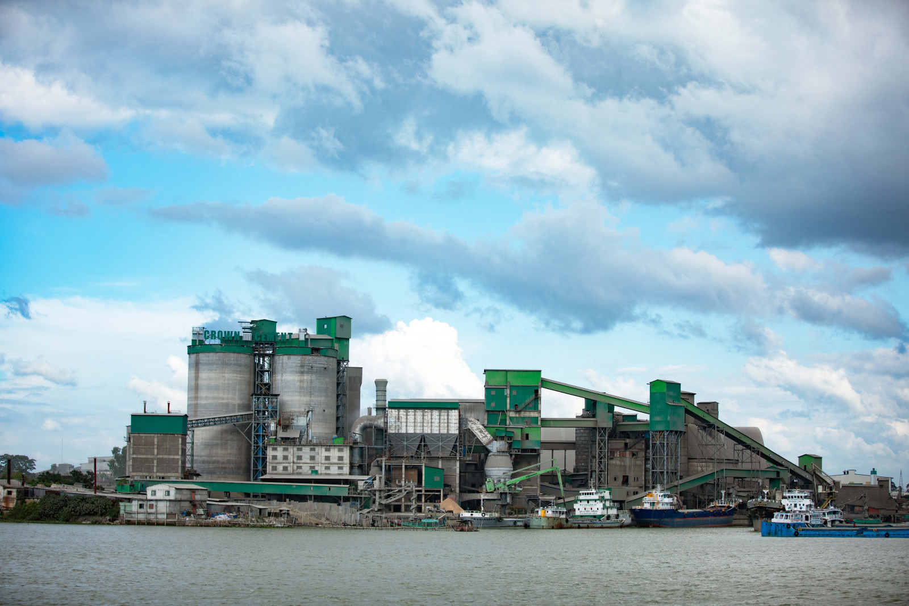

My Travelling Blog
Visited: Chhatak Cement Factory
 



How to get there
By Road: Chhatak Cement Factory is accessible via road from nearby cities such as Sylhet. You can hire a car or take a local bus to Chhatak town and reach.
By Public Transport: Local buses and auto-rickshaws are available from Sylhet or other parts of Sunamganj to take you directly.
By Private Car: Driving from Dhaka or Sylhet is feasible. From Sylhet, it's about a 1.5 to 2-hour drive, and from Dhaka, you can expect a longer journey.
When to go there
The best time to visit Chhatak Cement Factory is between November and February when the weather in Sunamganj is cool and pleasant. During this period, visitors can comfortably tour the industrial site without dealing with extreme heat or heavy rains, making it ideal for exploring the factory and its surroundings.
Why Visit Chhatak Cement Factory
Industrial Heritage: As one of the oldest cement factories in Bangladesh, Chhatak Cement Factory represents the country’s industrial evolution, especially in the building materials sector.
Strategic Location: The factory is strategically located near limestone quarries, which provides insight into the resource-driven nature of industrial operations in this region.
Cement Production Insight: Visitors can gain a firsthand understanding of how cement is produced, including the process of extracting limestone, grinding, and the production stages. Economic Importance: The factory contributes significantly to the local economy by providing employment and supporting ancillary industries in the region